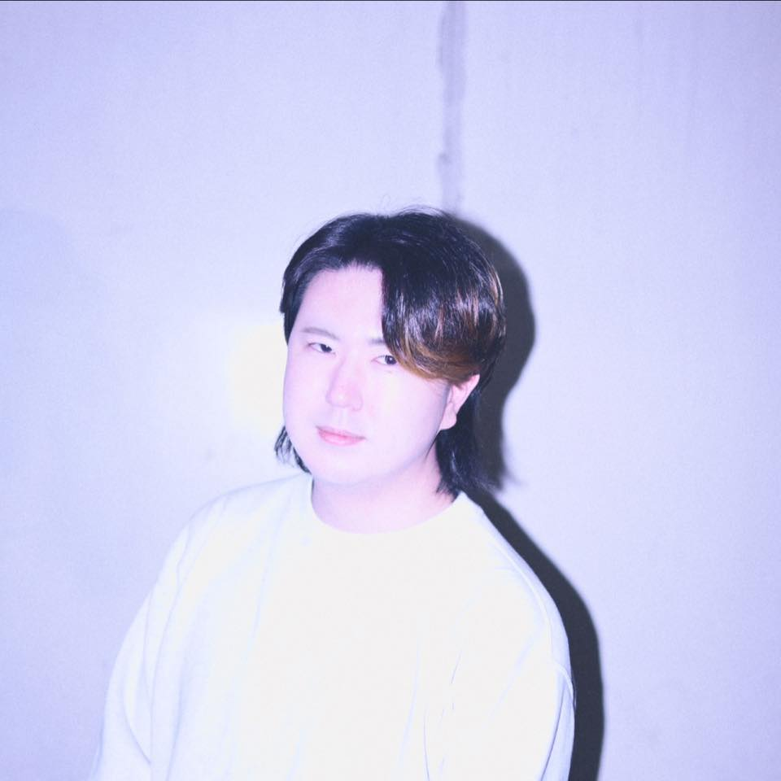
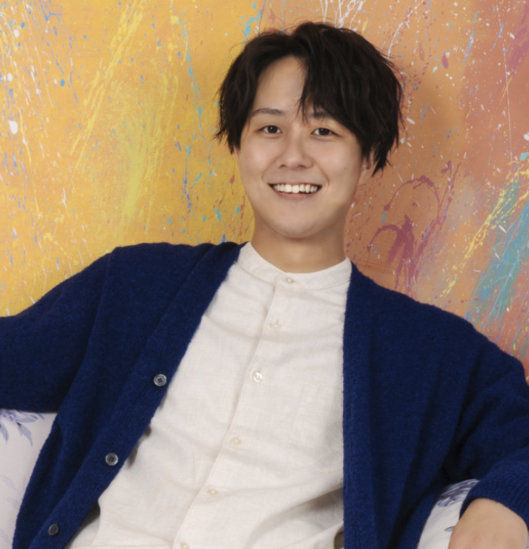

私たちは、従来の専属契約や永続的な所属に縛るレーベルではありません。「この曲で一緒にヒットを作ろう」というプロジェクトベースで、あなたの優れた制作力と、私たちの企画・マーケティング力を掛け合わせ、今の時代に響く楽曲を共創・還元します。 우리는 기존의 전속 계약이나 영구적인 소속으로 크리에이터를 얽매는 레이블이 아닙니다. '이 곡으로 함께 히트를 만들어보자'라는 단발성 프로젝트 기반으로, 당신의 뛰어난 제작 능력과 우리의 기획·마케팅 능력을 결합하여 이 시대에 깊은 울림을 주는 음악을 함께 만들고 그 가치를 나누고자 합니다.
個人の自由な活動を制限することなく、一曲単位で協力体制を構築するアジャイルなレーベルモデルです。 개인의 자유로운 활동을 제한하지 않고, 단 한 곡 단위로 협력 체계를 구축하는 애자일(Agile) 레이블 모델입니다.
クリエイター同士の「これ、バズりそう」という直感や遊び心をそのまま形にする自由度の高い制作スタイル。ヒット予測が困難な時代だからこそ、重苦しい審議プロセスを省き、仮説ベースでスピーディーに打席に立ち続けることで、時代のスタンダードを狙います。 크리에이터 간의 '이거 대박 나겠는데?'라는 직감과 즐거운 장난기를 그대로 형태화하는 자유도 높은 제작 스타일을 지향합니다. 히트를 예측하기 어려운 시대인 만큼, 무겁고 복잡한 심의 과정을 과감히 생략하고 가설을 바탕으로 빠르게 시장의 문을 두드려 시대의 새로운 스탠다드를 노립니다.
「誰が作ったか」ではなく「何を作ったか」で評価されるフェアな環境の確立。楽曲そのもののクオリティにスポットライトを当てることで、共創した作品が世界中で独立したIP（知的財産）として機能し、流通していく仕組みを構築します。 '누가 만들었는가'가 아닌 '무엇을 만들었는가'로 평가받는 공정한 환경을 확립합니다. 음악 그 자체의 퀄리티에 스포트라이트를 비춤으로써, 함께 만든 작품이 전 세계에서 독립된 IP(지식재산권)로서 기능하고 유통될 수 있는 구조를 구축합니다.
単発のコラボレーションだからこそ、そこから生まれるヒットを確固たるストーリー（実績）とし、クリエイターがその後の個人キャリアで大きな案件を獲得するための「名刺代わりの実績」として活用していただきます。 단발성 콜라보레이션이기에, 그 프로젝트를 통해 탄생한 히트를 확고한 성공 스토리(실적)로 삼을 수 있습니다. 크리에이터가 향후 개인 커리어에서 더 큰 프로젝트를 수주할 수 있도록 '명함이 되어줄 확실한 포트폴리오'로 활용하시기 바랍니다.
プロジェクトごとに、楽曲の制作から収益還元までをスムーズに進行します。 프로젝트별로 음원 제작부터 수익 정산까지 유연하고 신속하게 진행됩니다.
クリエイターの個性を活かしつつ、TikTokやInstagram、YouTubeショートなどのSNSプラットフォームで人々の心に一瞬で届く、中毒性のあるフック（ショート音源）を高いクオリティで企画・制作します。 크리에이터의 개성을 살리면서도 TikTok, Instagram, YouTube 쇼츠 등 SNS 플랫폼에서 유저들의 마음을 순식간에 사로잡을 중독성 있는 훅(숏폼 음원)을 높은 퀄리티로 기획·제작합니다.
一般ユーザーやインフルエンサーが、その楽曲を「自分の動画の背景（UGC）」として使いたくなるような、作品の世界観に合わせたプロモーションやトレンドの創出を行います。 일반 유저나 인플루언서들이 해당 음원을 '자신의 영상 배경(UGC)'으로 사용하고 싶어 하도록, 작품의 세계관에 맞춘 프로모션과 트렌드를 설계하고 만들어냅니다.
多くの動画に楽曲が起用されることで、作品への接触機会が劇的に増加。SNS上での楽曲使用数、および再生数を最大化させていきます。 수많은 영상에 음원이 활발히 차용되면서 작품의 노출 기회가 폭발적으로 증가합니다. SNS상에서의 음원 사용량 및 총 재생 수를 극대화합니다.
SNSで楽曲に魅了されたリスナーをSpotifyやApple Musicなどの配信サービスへ誘導。フル尺（ストリーミング音源）の再生数を伸ばすことで、一時的な流行で終わらない、継続的なデジタル著作권印税・配信収益を確立します。 SNS에서 음원에 매료된 리스너들을 Spotify, Apple Music, 멜론 등의 주요 스트리밍 서비스로 유도합니다. 완곡(풀 버전 음원)의 재생 수를 늘림으로써 일시적인 유행에 그치지 않는 지속적인 디지털 저작권 인세 및 스트리밍 수익을 확립합니다.
生み出された総収益は、あらかじめ設定した公正な比率に基づき、お互いの貢献を称え合う形でクリエイターとレーベル間でしっかりと分配します。 창출된 총수익은 사전에 설정한 공정한 비율에 따라, 서로의 기여를 인정하고 존중하는 방식으로 크리에이터와 레이블 간에 투명하게 분배됩니다.
それぞれの得意領域に集中し、最大の成果を生み出すためのサポート体制です。 각자의 전문 영역에 집중하여 최고의 성과를 이끌어내기 위한 지원 체계입니다.
「SNSという現代のステージ」で最も輝く構成を最初から計算して形にするため、確度の高いアプローチが可能です。 'SNS라는 현대의 무대'에서 가장 빛날 수 있는 곡 구성을 초기 단계부터 계산하여 형태화하므로, 성공 확률이 높은 접근이 가능합니다.
広告で無理やり見せるのではなく、ユーザーが「この音楽と一緒に自分を表現したい」と主体的に拡散してくれる仕掛けを自社の専門クリエイティブチームが内製でスピード制作。本質的なファンを増やします。 광고를 통해 억지로 보여주는 것이 아니라, 유저가 '이 음악과 함께 자신을 표현하고 싶다'며 주도적으로 확산할 수 있는 장치를 자사의 전문 크리에이티브 팀이 내부에서 신속하게 제작합니다. 이를 통해 본질적인 팬덤을 확장합니다.
主要配信サービス（Spotify/Apple Music等）の公式プレイリストへの直接ピッチング（推薦）を行いリリース初期から露出を獲得。さらにグッズ化、株主ネットワークを通じたメディア・イベント展開までトータルで引き上げます。 주요 음원 서비스(Spotify, Apple Music 등)의 공식 플레이리스트에 직접 피칭(추천)을 진행하여 발매 초기부터 노출을 확보합니다. 나아가 굿즈 제작, 주주 네트워크를 통한 미디어·이벤트 연계까지 종합적으로 전개합니다.
一回限りのプロジェクトだからこそ、対等でクリアな分配を保証します。 프로젝트 기반의 협업인 만큼, 대등하고 투명한 분배를 보장합니다.
チーム構築時に収益分配ルールや希望条件を明確にし、契約を締結した上で進行します。 팀 빌딩 시 수익 분배 규칙과 희망 조건을 명확히 하고, 계약을 체결한 후 본격적인 제작을 진행합니다.
SNSでのバイラル構造から逆算した楽曲テーマとコンセプトを設計します。 SNS상의 바이럴 구조를 역산하여 음원 테마와 메인 컨셉을 설계합니다.
コンセプトに合致する作曲家、シンガー、MV制作者、エンジニアをプロジェクトごとにマッチングします。 기획 컨셉에 부합하는 작곡가, 싱어, MV 제작자, 엔지니어를 단발성 프로젝트별로 매칭합니다.
プラットフォーム上で最も映えるフック音源と、UGCを誘発する動画コンテンツを並行して作り上げます。 플랫폼에서 가장 시선을 사로잡을 수 있는 훅 음원과 UGC를 유도하는 영상 콘텐츠를 동시에 빌드업합니다.
お互いの専門性を活かして音源の細かいニュアンスや展開を徹底的に調整・最適化します。 서로의 전문성을 발휘하여 음원의 미세한 뉘앙스나 전개 구성을 철저하게 조정하고 최적화합니다.
自社のSNS運用部隊が、独自のプロモーション手法でTikTokやInstagram等の主要メディアで一気に拡散を仕掛けます。 자사의 SNS 전담 운영 부서가 고유의 프로모션 방법론을 통해 TikTok, Instagram 등 주요 미디어에서 강력하게 확산을 주도합니다.
再生実績等に基づき、あらかじめ約束した比率で収益を透明性高く分配します。 스트리밍 재생 실적 등을 기반으로 사전에 약정한 비율에 따라 수익을 투명하게 정산하여 분배합니다.
制作の現場に寄り添い、確かな実績とマーケティング力で並走します。 제작 현장에서 함께 호흡하며, 확실한 실적과 마케팅 노하우로 서포트합니다.

広告代理店・制作会社での豊富なクリエイティブ経験をバックグラウンドに持つ音楽プロデューサー。独自の音楽レーベルを9年間運営し、合計再生数100万回を超える楽曲プロデュース実績を保有。音楽イベントの海外展開プロデュースなども手がけ、グローバルな視点でのエンターテインメントビジネスを展開しています。 광고 대행사 및 제작사에서의 풍부한 크리에이티브 경험을 바탕으로 활동 중인 음악 프로듀서. 독자적인 음악 레이블을 9년간 운영하며 누적 재생 수 100만 회 이상을 기록한 음원 프로듀싱 실적을 보유하고 있습니다. 음악 이벤트의 글로벌 전개 프로듀싱 등도 담당하며 글로벌한 시각에서 엔터테인먼트 비즈니스를 전개하고 있습니다.
広告代理店時代に培ったデジタルマーケティングの知見（提案、制作、配信後分析）を音楽プロデュースに還元。データに基づいた確度の高いアプローチを提供します。 광고 대행사 시절 쌓아온 디지털 마케팅 지식(제안, 제작, 집행 후 분석)을 음악 프로듀싱에 환원합니다. 데이터를 기반으로 정밀하고 성공 확률 높은 접근 방식을 제공합니다.
世界観を体現するディレクション経験を活かし、楽曲のコンセプト設計からプロモーションまでをトータルで牽引します。クリエイター個人の感性と意思決定を重視した制作対話を心掛けています。 브랜드 고유의 세계관을 시각화하고 구체화해 온 디렉션 경험을 살려, 음원의 컨셉 설계부터 프로모션까지 전 과정을 총괄 리드합니다. 크리에이터 개인의 감성과 주도적인 의사결정을 중시하는 제작 파트너십을 지향합니다.

ボカロP、作詞・作曲・編曲家として多方面でヒット作を手掛けるサウンドプロデューサー。KUROGO株式会社の取締役を務め、音楽的なトレンドの分析やクリエイター目線に立った制作ディレクションに強みを持つ。『プロジェクトセカイ カラフルステージ！ feat. 初音ミク』をはじめとする人気IPや、数々のVTuber、アーティストへの楽曲提供実績を誇り、ポップかつフックのあるキャッチーなメロディメイクでZ世代を中心に熱い支持を集めています。 보컬로이드 프로듀서(보카로P), 작사·작곡·편곡가로서 다방면에서 히트작을 선보이고 있는 사운드 프로듀서. KUROGO 주식회사의 이사를 맡고 있으며, 음악 트렌드 분석 및 크리에이터의 관점을 반영한 제작 디렉션에 강점을 가지고 있습니다. '프로젝트 세카이 컬러풀 스테이지! feat. 하츠네 미쿠'를 비롯한 유명 IP 및 다수의 버튜버(VTuber), 아티스트에게 곡을 제공한 실적을 자랑하며, 팝하면서도 귀에 감기는 캐치한 멜로디 메이킹으로 Z세대를 중심으로 뜨거운 지지를 얻고 있습니다.
自身もクリエイターとして第一線で活動する知見を活かし、TikTokやYouTube等で「ユーザーが使いたくなる、口ずさみたくなる」バイラル性の高い楽曲設計を的確に言語化・ディレクションします。 본인 스스로가 크리에이터로서 최전선에서 활동하며 얻은 인사이트를 바탕으로, TikTok이나 YouTube 등에서 '유저가 직접 사용하고 싶고, 따라 부르고 싶어지는' 바이럴 요소가 강한 음원 설계를 명확하게 언어화하고 디렉션합니다.
制作側の「こだわり」と商業的な「ヒット」のバランスを重視し、参加するクリエイターたちが自らの個性を最大限に発揮できるような、対等で丁寧なコミュニケーションと制作環境を提供します。 제작자의 '장인 정신'과 상업적인 '히트' 사이의 균형을 중시하며, 참여하는 크리에이터들이 자신의 개성을 최대로 발휘할 수 있도록 수평적이고 세심한 소통 및 제작 환경을 제공합니다.
まずはあなたの作品や実績を添えて、エントリーフォームよりご連絡ください。共同制作案件に向けて、マッチするコンセプトを検討します。 먼저 당신의 포트폴리오나 기존 작업물을 첨부하여 지원 폼을 통해 연락해 주세요. 단발성 공동 제작 프로젝트를 위한 최적의 컨셉을 검토하겠습니다.
現在、コラボレーションエントリーフォームの開設準備中です。
受付開始まで今しばらくお待ちください。
현재 콜라보레이션 지원서 접수 폼 개설을 준비 중입니다.
접수가 시작될 때까지 조금만 더 기다려 주시기 바랍니다.